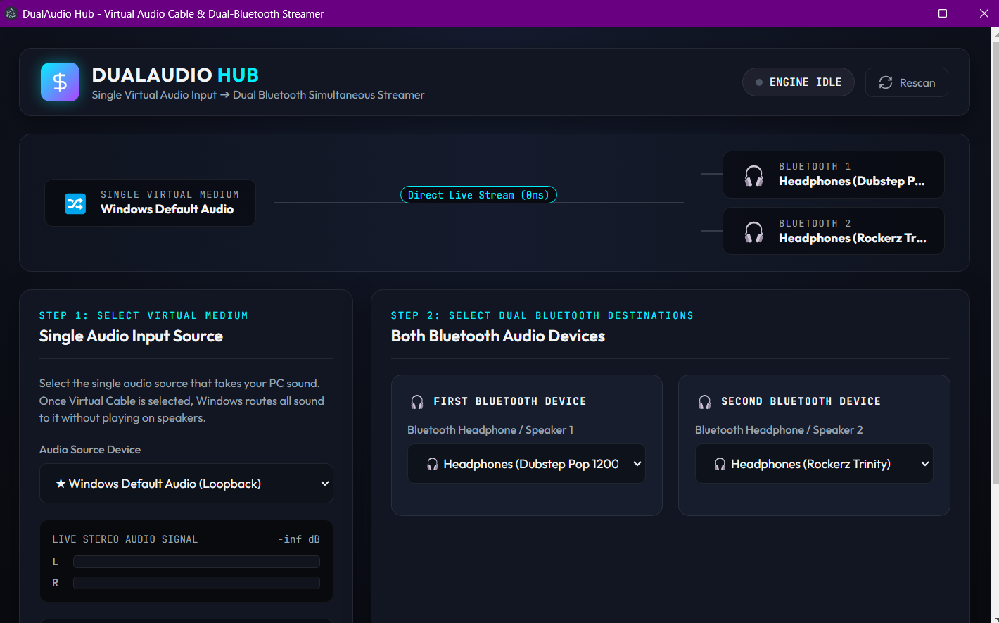

Direct Loopback
Captures whatever Windows is playing — no drivers, nothing to configure. Select it and hit start.
FOR WINDOWS 10 & 11
DualAudio Hub streams one audio source to two Bluetooth headphones or speakers at the same time — in real time, with per-device sync alignment and volume control.
Free · Portable exe · No installation required

The dashboard — live signal routing, stereo VU metering, and per-device targets.
HOW IT WORKS
Captures whatever Windows is playing — no drivers, nothing to configure. Select it and hit start.
Route a single app — Spotify, Discord, a DAW — through a virtual cable and broadcast only that, while everything else stays on your speakers.
FEATURES
The identical stream, duplicated live to two devices.
Millisecond offset per device kills echo between mismatched codecs (SBC / AAC / aptX).
48 kHz ↔ 44.1 kHz mismatches handled transparently.
Per-device volume (0–200%) and mute, per-device delay.
60 fps stereo peak meters in the dashboard — you see the signal.
Headless scripting and automation via DualAudioCli.ps1.
QUICK START
Portable exe — double-click it. No installer, no setup wizard.
Choose the audio source and your two Bluetooth headphones or speakers.
Hit start. Hear a delay between devices? Nudge the sync offset until both are in phase.